134 פסוקים

קהלת
למה להשקיע במשהו חולף?
"דּוֹר הֹלֵךְ וְדוֹר בָּא וְהָאָרֶץ לְעוֹלָם עֹמָדֶת"
קהלת א, ד

קהלת
איך נשמרים משחיקה בשגרה?
"וְזָרַח הַשֶּׁמֶשׁ וּבָא הַשָּׁמֶשׁ וְאֶל מְקוֹמוֹ שׁוֹאֵף זוֹרֵחַ הוּא שָׁם"
קהלת א, ה

קהלת
מתי החושים שלנו יגידו "די"?
"כָּל הַדְּבָרִים יְגֵעִים לֹא יוּכַל אִישׁ לְדַבֵּר לֹא תִשְׂבַּע עַיִן לִרְאוֹת..."
קהלת א, ח

קהלת
האם הפתרון באמת נמצא בפינה?
"מַה שֶּׁהָיָה הוּא שֶׁיִּהְיֶה וּמַה שֶּׁנַּעֲשָׂה הוּא שֶׁיֵּעָשֶׂה וְאֵין כָּל..."
קהלת א, ט

קהלת
מתי צריך לדעת להשלים עם החסר?
"מְעֻוָּת לֹא יוּכַל לִתְקֹן וְחֶסְרוֹן לֹא יוּכַל לְהִמָּנוֹת"
קהלת א, טו

קהלת
שמחת הבל: האם זה צחוק בריחה או צחוק אמיתי?
"לִשְׂחוֹק אָמַרְתִּי מְהוֹלָל וּלְשִׂמְחָה מַה זֹּה עֹשָׂה"
קהלת ב, ב

קהלת
מעשי ידיים: למה עמל גדול נגמר בתחושת ריקנות?
"וּפָנִיתִי אֲנִי בְּכָל מַעֲשַׂי שֶׁעָשׂוּ יָדַי וּבֶעָמָל שֶׁעָמַלְתִּי לַעֲשׂו..."
קהלת ב, יא

קהלת
מנוחת הנפש: מתנת ה' ליהנות מהדברים הפשוטים
"אֵין טוֹב בָּאָדָם שֶׁיֹּאכַל וְשָׁתָה וְהֶרְאָה אֶת נַפְשׁוֹ טוֹב בַּעֲמָלוֹ גּ..."
קהלת ב, כד

קהלת
חכמה וכעס: האם הידע שלכם מביא תסכול?
"כִּי בְּרֹב חָכְמָה רָב כָּעַס וְיוֹסִיף דַּעַת יוֹסִיף מַכְאוֹב"
קהלת א, יח

קהלת
לקרוא את הזמן: מתי לדעת להחליף מציאות?
"לַכֹּל זְמָן וְעֵת לְכָל חֵפֶץ תַּחַת הַשָּׁמָיִם"
קהלת ג, א

שמואל א
נקודת כח מפתיעה לתפילה
"וְהִיא מָרַת נָפֶשׁ וַתִּתְפַּלֵּל עַל ה' וּבָכֹה תִבְכֶּה"
שמואל א, א, י

שמואל א
לא למהר לשפוט אחרים
"וְחַנָּה הִיא מְדַבֶּרֶת עַל לִבָּהּ... וַיַּחְשְׁבֶהָ עֵלִי לְשִׁכֹּרָה"
שמואל א, א, יג

שמואל א
איך מזהים את הקול שקורא לנו?
"וַיִּקְרָא ה' אֶל שְׁמוּאֵל... וַיָּרָץ אֶל עֵלִי וַיֹּאמֶר הִנְנִי כִּי קָרָאתָ..."
מתוך שמואל א, ג, ד-ז

שמואל א
מתי בקשה טובה הופכת לבעייתית?
"וַיֵּרַע הַדָּבָר בְּעֵינֵי שְׁמוּאֵל... כִּי לֹא אֹתְךָ מָאָסוּ כִּי אֹתִי מָאֲ..."
שמואל א, ח, ו-ז

שמואל א
מה קורה כשמאבדים את הכבוד?
"וַתִּקְרָא לַנַּעַר אִיכָבוֹד לֵאמֹר גָּלָה כָבוֹד מִיִּשְׂרָאֵל אֶל הִלָּקַח אֲ..."
שמואל א, ד, כא

שמואל א
איפה נמצאת העזרה האלוקית?
"וַיִּקַּח שְׁמוּאֵל אֶבֶן אַחַת... וַיִּקְרָא אֶת שְׁמָהּ אֶבֶן הָעֵזֶר וַיֹּאמַ..."
שמואל א, ז, יב

שמואל א
מהי מנהיגות אמיתית?
"וְסָבַב בֵּית אֵל וְהַגִּלְגָּל וְהַמִּצְפָּה וְשָׁפַט אֶת יִשְׂרָאֵל אֵת כָּל ה..."
שמואל א, ז, טז

שמואל א
למה ה' נותן לנו לבחור גם בטעות?
"וְעַתָּה הִנֵּה הַמֶּלֶךְ אֲשֶׁר בְּחַרְתֶּם אֲשֶׁר שְׁאֶלְתֶּם וְהִנֵּה נָתַן ה..."
שמואל א, יב, יג

שמואל א
מהי המלחמה האמיתית?
"וַיַּכּוּ בַיּוֹם הַהוּא בַּפְּלִשְׁתִּים מִמִּכְמָשׂ אַיָּלוֹנָה וַיָּעַף הָעָם..."
שמואל א, יד, לא

שמואל א
הכוח שבהשתחוויה
"וְגַם אָנֹכִי הִשְׁאִלְתִּהוּ לַה' כָּל הַיָּמִים אֲשֶׁר הָיָה הוּא שָׁאוּל לַה'..."
שמואל א, א, כח

שמואל א
תפילה שמתחייבת לאחריות
"וַתִּדֹּר נֶדֶר וַתֹּאמַר ה' צְבָאוֹת אִם רָאֹה תִרְאֶה בְּעָנִי אֲמָתֶךָ וּזְכַ..."
שמואל א, א, יא

שמואל א
הנר שטרם כבה
"וְנֵר אֱלֹהִים טֶרֶם יִכְבֶּה וּשְׁמוּאֵל שֹׁכֵב בְּהֵיכַל ה' אֲשֶׁר שָׁם אֲרוֹן..."
שמואל א, ג, ג

שמואל א
כשה' עמו – והאחר סר
"וירא שאול מפני דוד כי ה' היה עמו ומעם שאול סר. ויסרהו שאול מעליו וישימהו לו שר א..."
שמואל א, יח, יב–יד

שמואל א
יראה מול קדושה
"ויאמרו אנשי בית שמש מי יוכל לעמוד לפני ה' האלהים הקדוש הזה ואל מי יעלה מעלינו"
שמואל א, ו, כ

שמואל א
לפני הישועה – להסיר ולהכין הלב
"ויאמר שמואל אל כל בית ישראל לאמר אם בכל לבבכם אתם שבים אל ה' הסירו את אלהי הנכר ..."
שמואל א, ז, ג

שמואל א
מנהיגות ביום ניצחון
"ויאמר שאול לא יומת איש ביום הזה כי היום עשה ה' תשועה בישראל"
שמואל א, יא, יג

שמואל א
רעם בקציר
"הלוא קציר חטים היום אקרא אל ה' ויתן קולות ומטר ודעו וראו כי רעתכם רבה אשר עשיתם ..."
שמואל א, יב, יז–יח

שמואל א
שמיעה – יסוד העבודה
"ויאמר שמואל החפץ לה' בעולות וזבחים כשמע בקול ה' הנה שמוע מזבח טוב להקשיב מחלב אי..."
שמואל א, טו, כב–כג

שמואל א
אלקנה – האיש ששחה נגד הזרם
"וְעָלָה הָאִישׁ הַהוּא מֵעִירוֹ מִיָּמִים יָמִימָה לְהִשְׁתַּחֲוֺת וְלִזְבֹּחַ ל..."
שמואל א', א', ג'

שמואל א
כוונה טובה, מעשה פוגע
"*וְכִעֲסַתָּה צָרָתָהּ גַּם כַּעַס בַּעֲבוּר הַרְּעִמָהּ כִּי סָגַר ה' בְּעַד רַ..."
שמואל א', א', ו'

שמואל א
תפילה מתוך הלב
"*וַתַּעַן חַנָּה וַתֹּאמֶר לֹא אֲדֹנִי אִשָּׁה קְשַׁת רוּחַ אָנֹכִי וְיַיִן וְשֵ..."
שמואל א', א', ט"ו

שמואל א
הגדולה שבלהודות בטעות
"*וַיַּעַן עֵלִי וַיֹּאמֶר לְכִי לְשָׁלוֹם וֵאלֹהֵי יִשְׂרָאֵל יִתֵּן אֶת שֵׁלָתֵ..."
שמואל א', א', י"ז

שמואל א
להחזיר את הפיקדון
"*וְגַם אָנֹכִי הִשְׁאִלְתִּהוּ לַה' כָּל הַיָּמִים אֲשֶׁר הָיָה הוּא שָׁאוּל לַה..."
שמואל א', א', כ"ח

שמואל א
המהפך של האמונה
"*ה' מֵמִית וּמְחַיֶּה מוֹרִיד שְׁאוֹל וַיָּעַל. ה' מוֹרִישׁ וּמַעֲשִׁיר מַשְׁפִּ..."
שמואל א', ב', ו'-ז'

שמואל א
כשההרגל הופך לזלזול
"*וְאָמַר לֹא כִּי עַתָּה תִתֵּן וְאִם לֹא לָקַחְתִּי בְחָזְקָה. וַתְּהִי חַטַּאת..."
שמואל א', ב', ט"ז-י"ז

שמואל א
לגדול באווירה מורכבת
"*וְהַנַּעַר שְׁמוּאֵל הֹלֵךְ וְגָדֵל וָטוֹב גַּם עִם ה' וְגַם עִם אֲנָשִׁים*"
שמואל א', ב', כ"ו
שמואל א
הגדולה שבלהודות בטעות
"*וַיַּעַן עֵלִי וַיֹּאמֶר לְכִי לְשָׁלוֹם וֵאלֹהֵי יִשְׂרָאֵל יִתֵּן אֶת שֵׁלָתֵ..."
שמואל א', א', י"ז
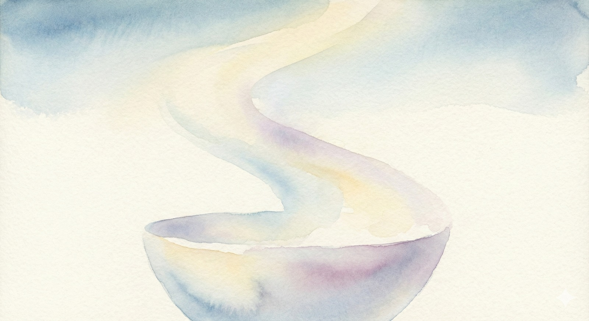
שמואל א
האומנות להקשיב
"*וַיָּרָץ אֶל עֵלִי וַיֹּאמֶר הִנְנִי כִּי קָרָאתָ לִּי וַיֹּאמֶר לֹא קָרָאתִי ש..."
שמואל א', ג', ה'
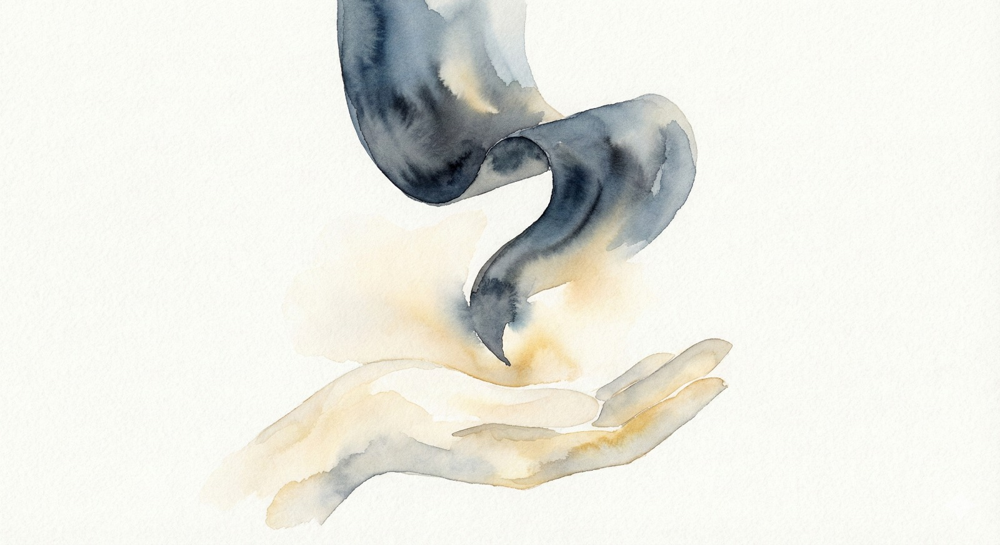
שמואל א
לקבל את הדין באהבה
"*וַיַּגֶּד לוֹ שְׁמוּאֵל אֶת כָּל הַדְּבָרִים וְלֹא כִחֵד מִמֶּנּוּ וַיֹּאמַר ה'..."
שמואל א', ג', י"ח
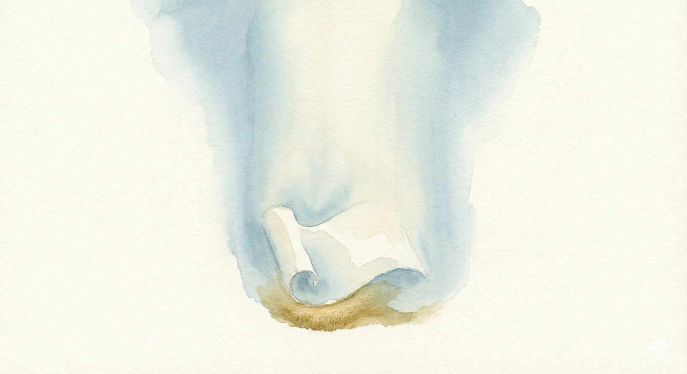
שמואל א
כוחה של מילה
"וַיִּגְדַּל שְׁמוּאֵל וַה' הָיָה עִמּוֹ וְלֹא הִפִּיל מִכָּל דְּבָרָיו אָרְצָה"
שמואל א', ג', י"ט
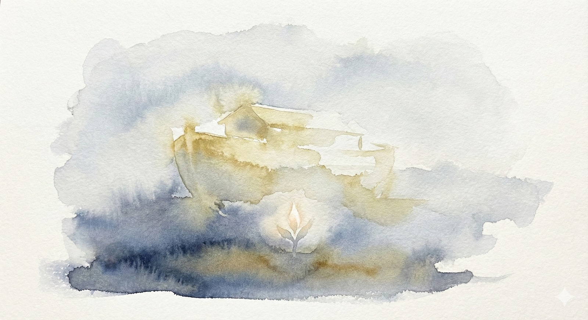
שמואל א
טעות בביטחון בה’
"וַיָּבֹא הָעָם אֶל הַמַּחֲנֶה וַיֹּאמְרוּ זִקְנֵי יִשְׂרָאֵל לָמָּה נְגָפָנוּ ה'..."
שמואל א', ד', ג'
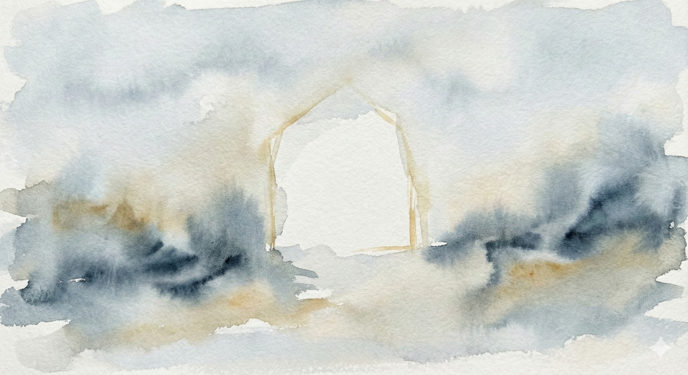
שמואל א
כשכבוד ה' גולה
"*וַתִּקְרָא לַנַּעַר אִי כָבוֹד לֵאמֹר גָּלָה כָבוֹד מִיִּשְׂרָאֵל אֶל הִלָּקַח ..."
שמואל א', ד', כ"א
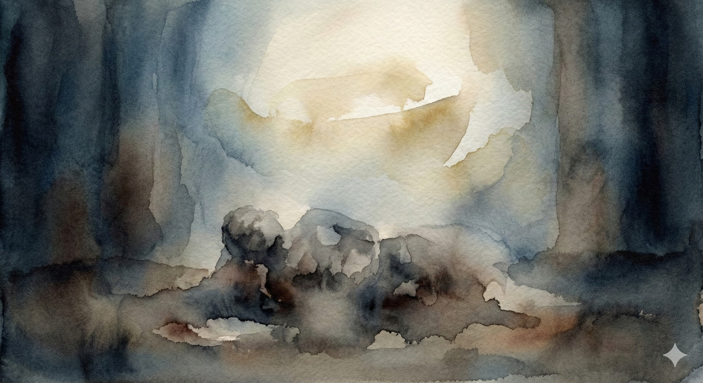
שמואל א
האמת מנצחת גם בחושך
"*וַיַּשְׁכִּמוּ אַשְׁדּוֹדִים מִמָּחֳרָת וְהִנֵּה דָגוֹן נֹפֵל לְפָנָיו אַרְצָה ..."
שמואל א', ה', ד'
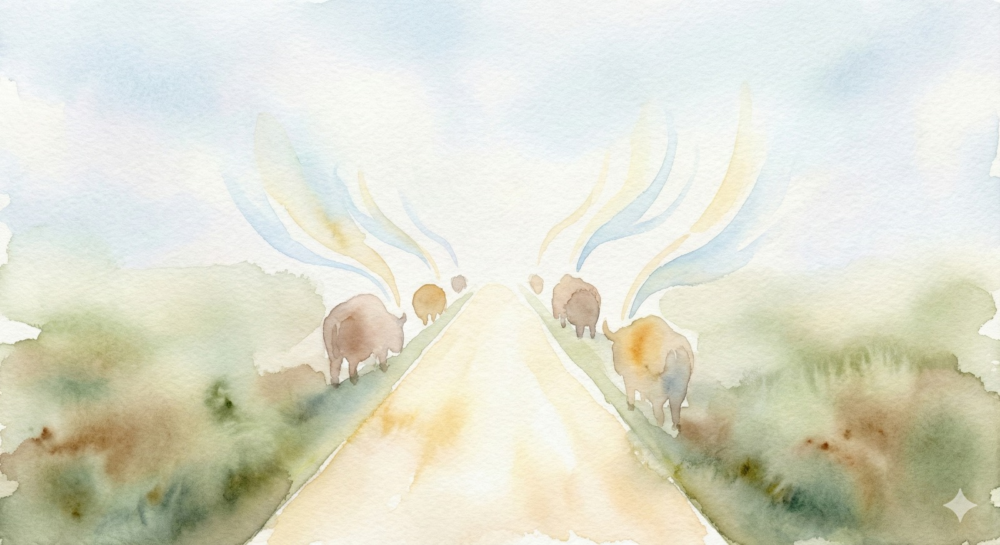
שמואל א
שירת הטבע
"וַיִּשַּׁרְנָה הַפָּרוֹת בַּדֶּרֶךְ עַל דֶּרֶךְ בֵּית שֶׁמֶשׁ בִּמְסִלָּה אַחַת ..."
שמואל א', ו', י"ב
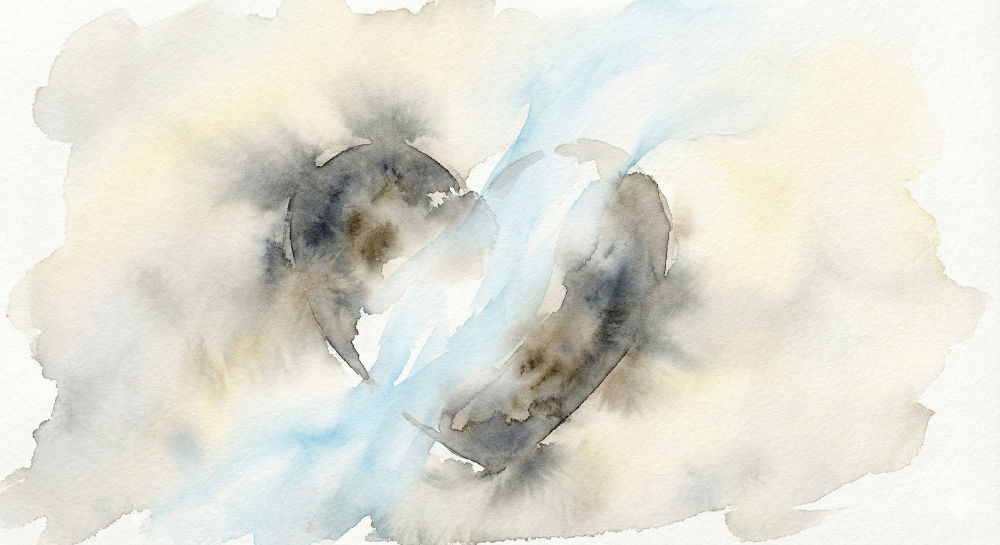
שמואל א
ניקיון פנימי לפני הכל
"*וַיֹּאמֶר שְׁמוּאֵל אֶל כָּל בֵּית יִשְׂרָאֵל לֵאמֹר אִם בְּכָל לְבַבְכֶם אַתֶּ..."
שמואל א', ז', ג'
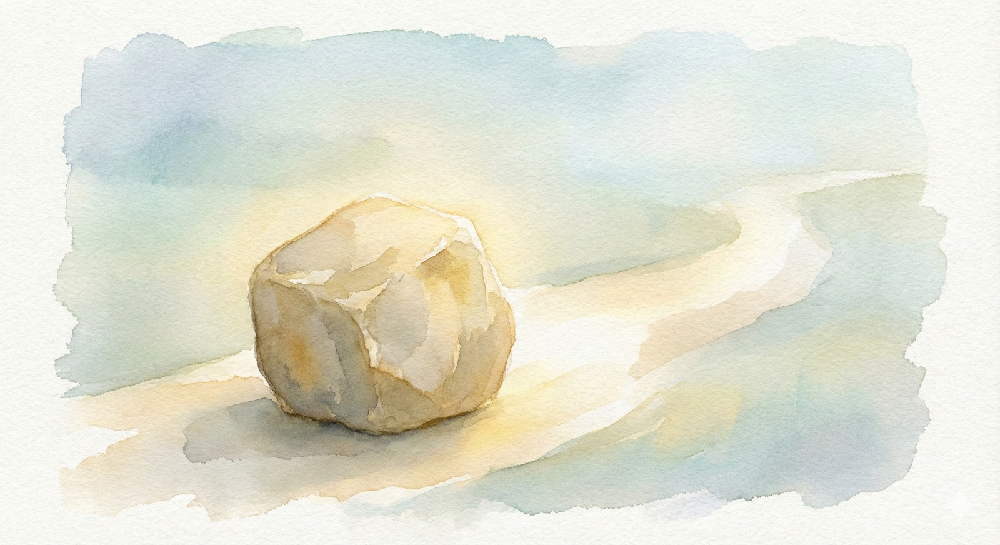
שמואל א
להכיר טובה על העבר
"*וַיִּקַּח שְׁמוּאֵל אֶבֶן אַחַת וַיָּשֶׂם בֵּין הַמִּצְפָּה וּבֵין הַשֵּׁן וַיִ..."
שמואל א', ז', י"ב
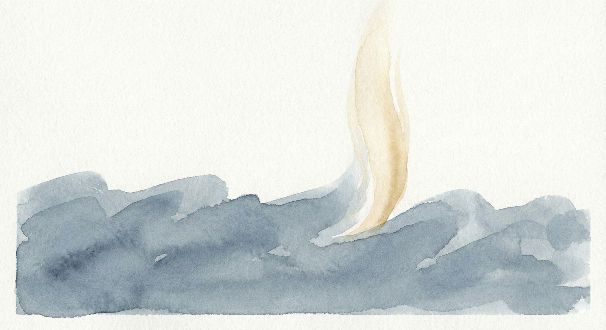
שמואל א
לא להיות "כמו כולם"
"*וַיֹּאמֶר ה' אֶל שְׁמוּאֵל שְׁמַע בְּקוֹל הָעָם... כִּי לֹא אֹתְךָ מָאָסוּ כִּי..."
שמואל א', ח', ז'
שמואל א
האבדות שמובילות למלוכה
"וַתֹּאבַדְנָה הָאֲתֹנוֹת לְקִישׁ אֲבִי שָׁאוּל... וַיַּעֲבֹר בְּהַר אֶפְרַיִם וַ..."
שמואל א', ט', ג'-ד'
שמואל א
האבדות שמובילות למלוכה
"וַתֹּאבַדְנָה הָאֲתֹנוֹת לְקִישׁ אֲבִי שָׁאוּל... וַיַּעֲבֹר בְּהַר אֶפְרַיִם וַ..."
שמואל א', ט', ג'-ד'
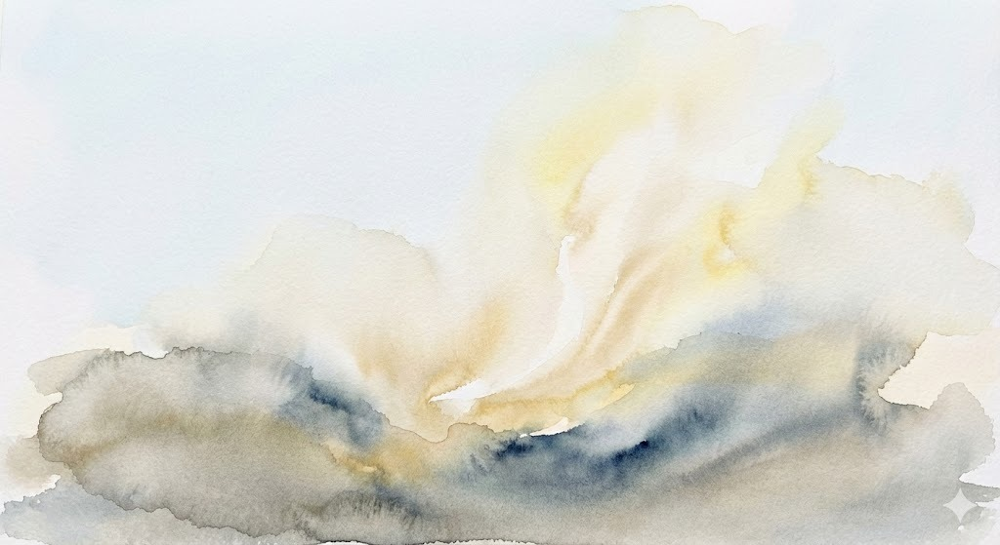
שמואל א
להיוולד מחדש
"וְצָלְחָה עָלֶיךָ רוּחַ ה' וְהִתְנַבִּיתָ עִמָּם וְנֶהְפַּכְתָּ לְאִישׁ אַחֵר"
שמואל א', י', ו'
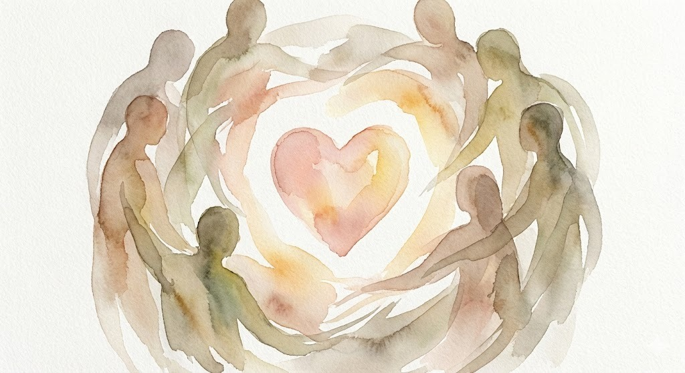
שמואל א
אנשי הלב
"וְגַם שָׁאוּל הָלַךְ לְבֵיתוֹ גִּבְעָתָה וַיֵּלְכוּ עִמּוֹ הַחַיִל אֲשֶׁר נָגַע ..."
שמואל א', י', כ"ו
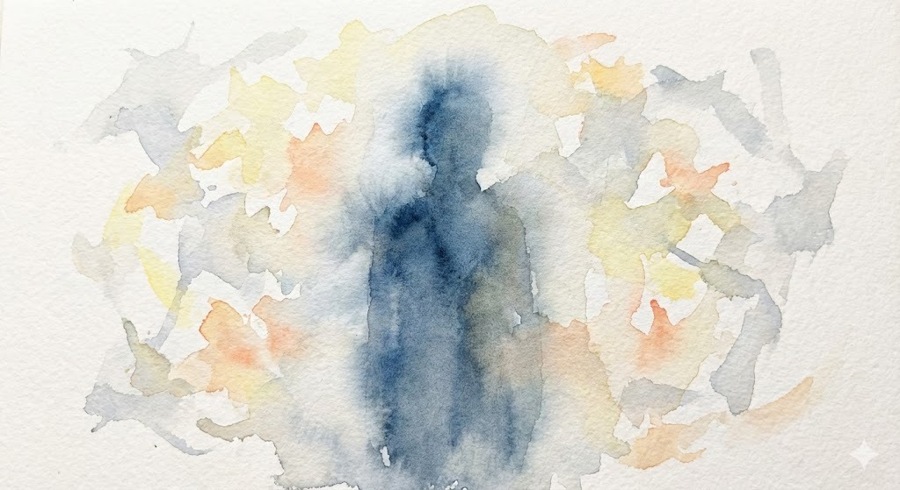
שמואל א
הכוח לשתוק
"וּבְנֵי בְלִיַּעַל אָמְרוּ מַה יֹּשִׁעֵנוּ זֶה וַיִּבְזֻהוּ וְלֹא הֵבִיאוּ לוֹ מ..."
שמואל א', י', כ"ז
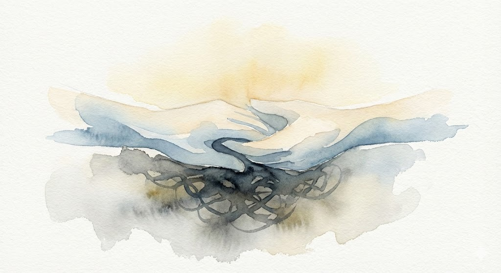
שמואל א
ניצחון ללא נקמה
"וַיֹּאמֶר הָעָם אֶל שְׁמוּאֵל מִי הָאֹמֵר שָׁאוּל יִמְלֹךְ עָלֵינוּ תְּנוּ הָאֲנ..."
שמואל א', י"א, י"ב-י"ג
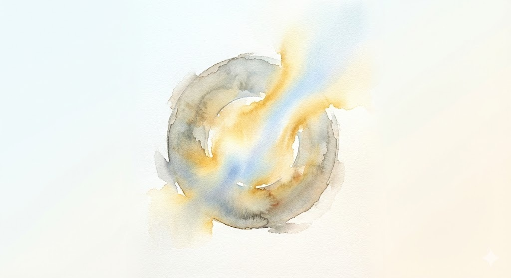
שמואל א
לנצח את השחיקה
"וַיֹּאמֶר שְׁמוּאֵל אֶל הָעָם לְכוּ וְנֵלְכָה הַגִּלְגָּל וּנְחַדֵּשׁ שָׁם הַמְּ..."
שמואל א', י"א, י"ד
שמואל א
הכוח המוסרי להוכיח
"הִנְנִי עֲנוּ בִי נֶגֶד ה' וְנֶגֶד מְשִׁיחוֹ אֶת שׁוֹר מִי לָקַחְתִּי וַחֲמוֹר מ..."
שמואל א', י"ב, ג'-ד'
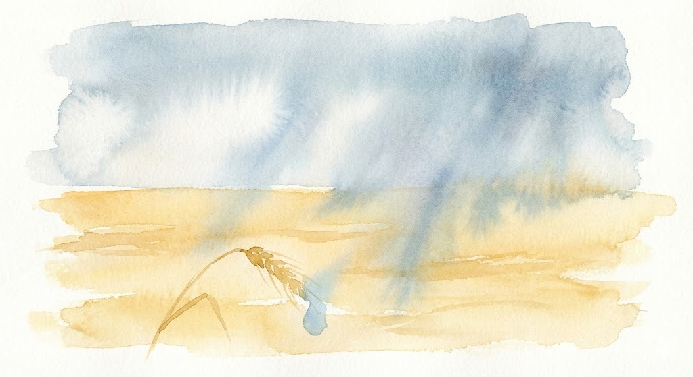
שמואל א
לא לחפש תחליפים
"הֲלוֹא קְצִיר חִטִּים הַיּוֹם אֶקְרָא אֶל ה' וְיִתֵּן קֹלוֹת וּמָטָר וּדְעוּ וּר..."
שמואל א', י"ב, י"ז
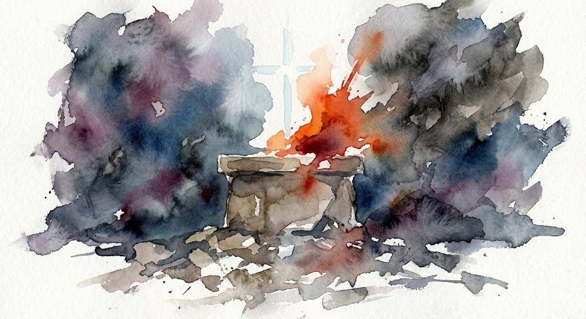
שמואל א
המבחן ברגע הלחץ
"וַיּוֹחֶל שִׁבְעַת יָמִים לַמּוֹעֵד אֲשֶׁר שְׁמוּאֵל וְשְׁמוּאֵל לֹא בָא הַגִּלְ..."
שמואל א', י"ג, ח'-ט'
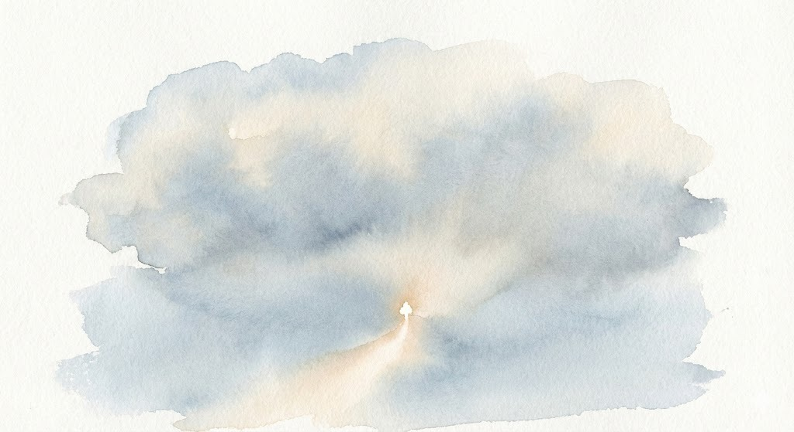
שמואל א
יחידים מול רבים
"וַיֹּאמֶר יְהוֹנָתָן אֶל הַנַּעַר נֹשֵׂא כֵלָיו לְכָה וְנַעְבְּרָה אֶל מַצַּב הָ..."
שמואל א', י"ד, ו'
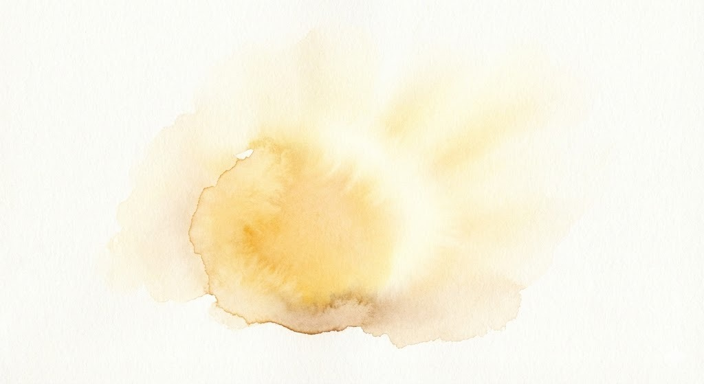
שמואל א
מותר לטעום דבש
"וַיֹּאֶל שָׁאוּל אֶת הָעָם לֵאמֹר אָרוּר הָאִישׁ אֲשֶׁר יֹאכַל לֶחֶם עַד הָעֶרֶב..."
שמואל א', י"ד, כ"ד; כ"ט
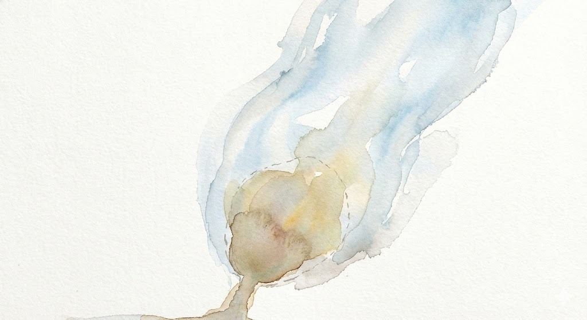
שמואל א
ציות ללא פשרות
"וַיַּחְמֹל שָׁאוּל וְהָעָם עַל אֲגָג וְעַל מֵיטַב הַצֹּאן וְהַבָּקָר וְהַמִּשְׁנ..."
שמואל א', ט"ו, ט'
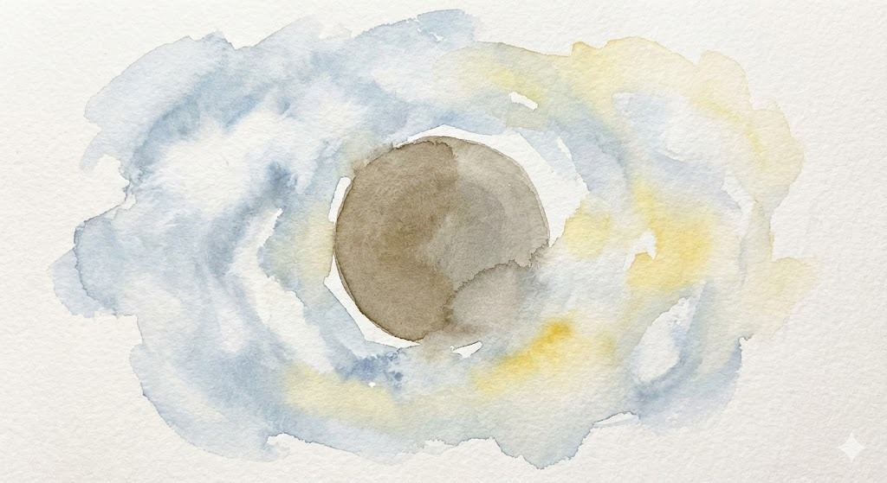
שמואל א
בלי תירוצים
"וַיֹּאמֶר שָׁאוּל אֶל שְׁמוּאֵל חָטָאתִי כִּי עָבַרְתִּי אֶת פִּי ה' וְאֶת דְּבָ..."
שמואל א', ט"ו, כ"ד
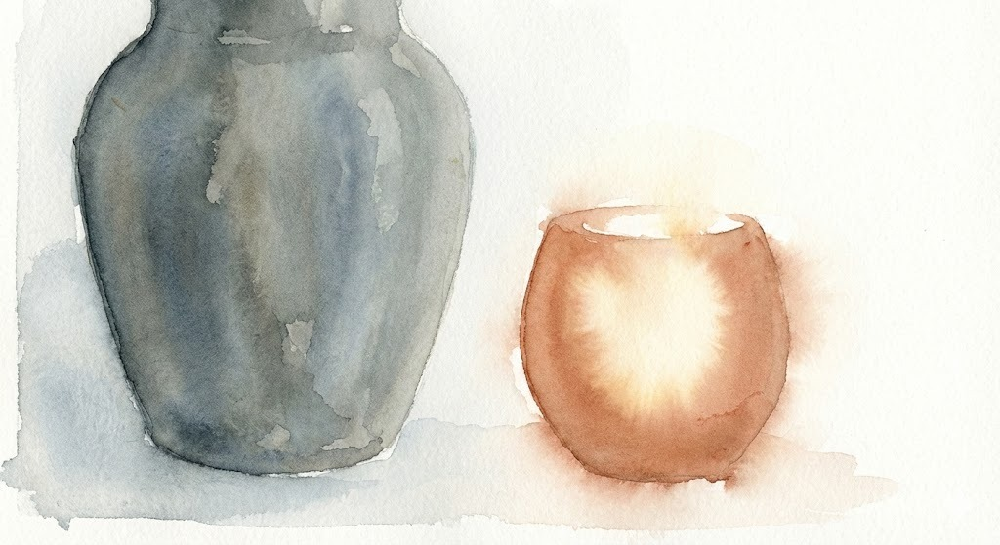
שמואל א
לא להסתכל בקנקן
"וַיֹּאמֶר ה' אֶל שְׁמוּאֵל: אַל תַּבֵּט אֶל מַרְאֵהוּ וְאֶל גְּבֹהַּ קוֹמָתוֹ כִ..."
שמואל א', ט"ז, ז'
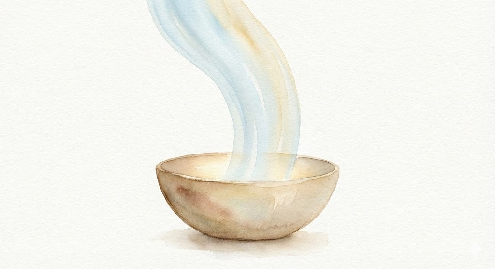
שמואל א
איפה שורה רוח ה'?
"וַיִּקַּח שְׁמוּאֵל אֶת קֶרֶן הַשֶּׁמֶן וַיִּמְשַׁח אֹתוֹ בְּקֶרֶב אֶחָיו, וַתִּ..."
שמואל א', ט"ז, י"ג
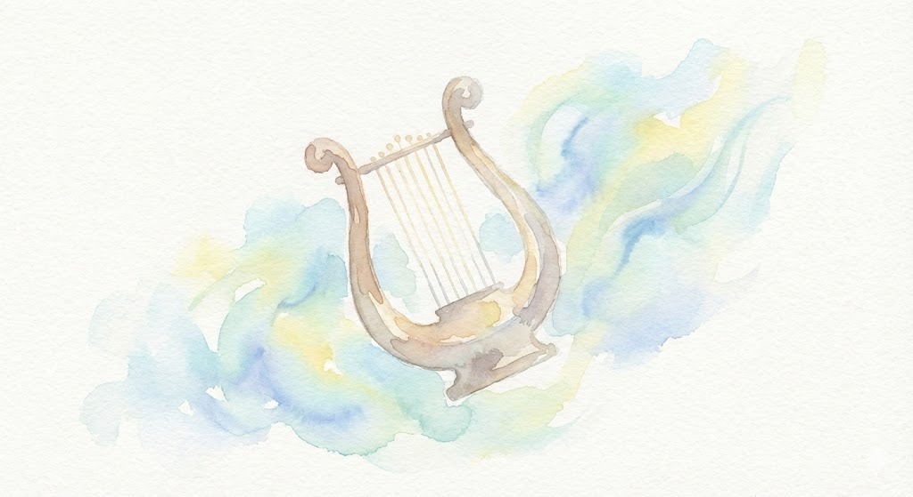
שמואל א
הניגון כרפואה לנפש
"וְהָיָה בִּהְיוֹת רוּחַ אֱלֹהִים אֶל שָׁאוּל, וְלָקַח דָּוד אֶת הַכִּנּוֹר וְנִג..."
שמואל א', ט"ז, כ"ג
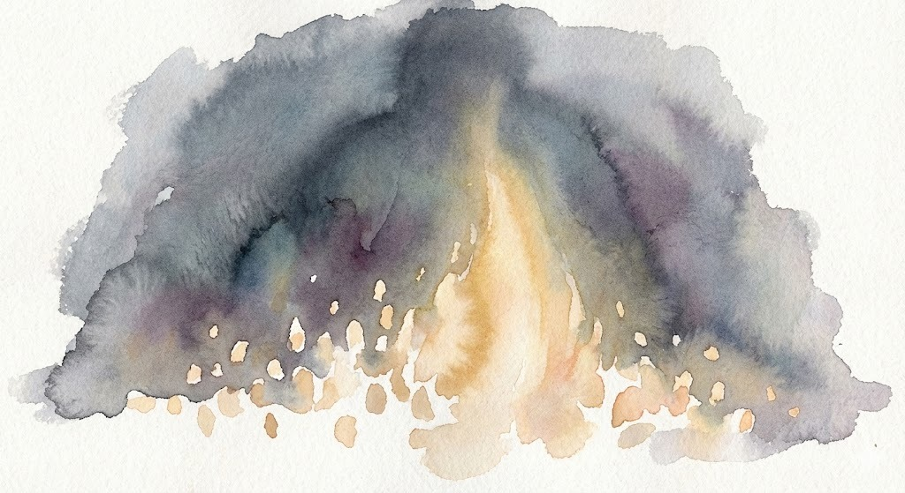
שמואל א
לא לתת לפחד לשתק
"וַיַּעֲמֹד וַיִּקְרָא אֶל מַעַרְכֹת יִשְׂרָאֵל וַיֹּאמֶר לָהֶם: לָמָּה תֵצְאוּ ל..."
שמואל א', י"ז, ח'-י"א
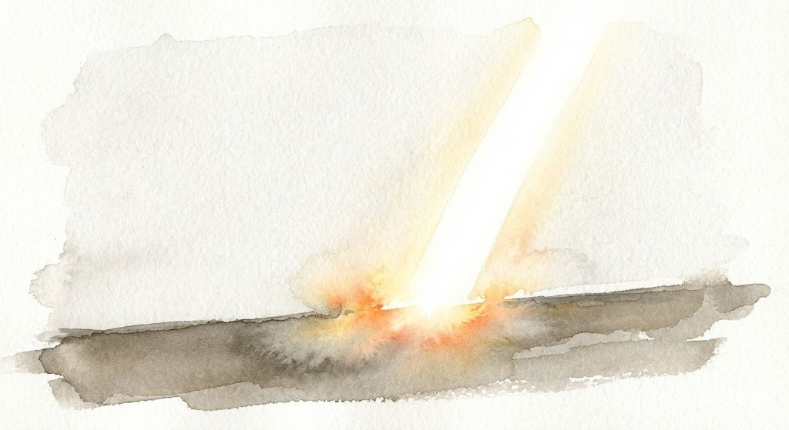
שמואל א
על מה באמת נלחמים?
"וַיֹּאמֶר דָּוד אֶל הָאֲנָשִׁים הָעֹמְדִים עִמּוֹ לֵאמֹר: מַה יֵּעָשֶׂה לָאִישׁ ..."
שמואל א', י"ז, כ"ו
שמואל א
שם ה' מול החרב
"וַיֹּאמֶר דָּוד אֶל הַפְּלִשְׁתִּי אַתָּה בָּא אֵלַי בְּחֶרֶב וּבַחֲנִית וּבְכִי..."
שמואל א', י"ז, מ"ה
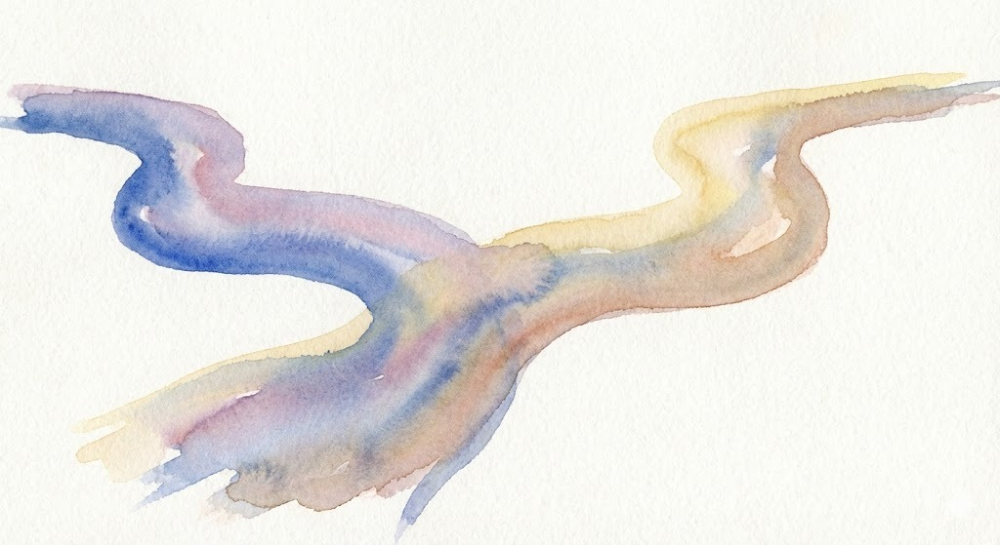
שמואל א
אהבה ללא תנאי
"וַיְהִי כְּכַלֹּתוֹ לְדַבֵּר אֶל שָׁאוּל וְנֶפֶשׁ יְהוֹנָתָן נִקְשְׁרָה בְּנֶפֶש..."
שמואל א', י"ח, א'-ד'
שמואל א
כשחכמה גוברת על פחד
"וַיְהִי דָוִד לְכָל דְּרָכָו מַשְׂכִּיל וַה' עִמּוֹ, וַיַּרְא שָׁאוּל אֲשֶׁר הוּ..."
שמואל א', י"ח, י"ד-ט"ו
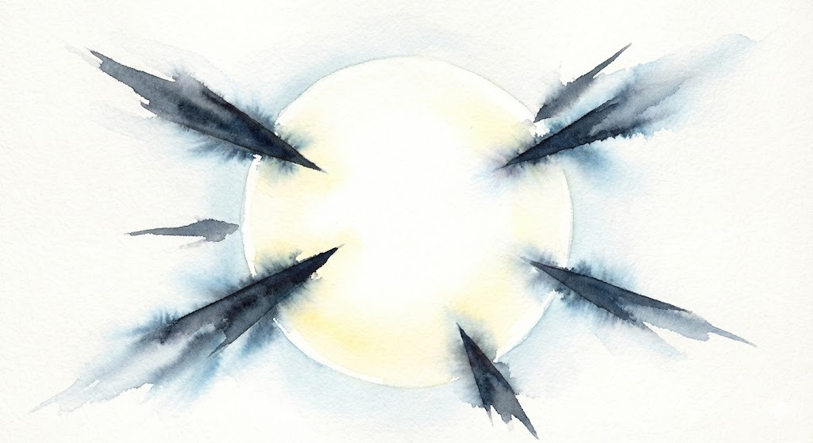
שמואל א
הקדושה שממיסה את הרוע
"וַיַּרְא אֶת לַהֲקַת הַנְּבִיאִים נִבְּאִים, וּשְׁמוּאֵל עֹמֵד נִצָּב עֲלֵיהֶם, ..."
שמואל א', י"ט, כ'
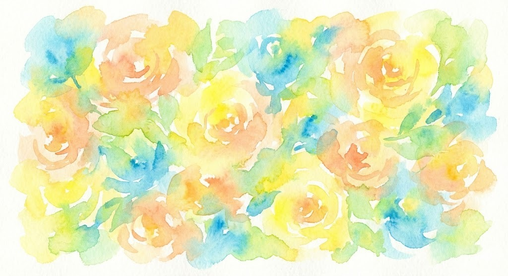
שמואל א
כשאין ברירה – משתטים
"וַיְשַׁנּוֹ אֶת טַעְמוֹ בְּעֵינֵיהֶם וַיִּתְהֹלֵל בְּיָדָם... וַיֹּאמֶר אָכִישׁ...."
שמואל א', כ"א, י"ד-ט"ז
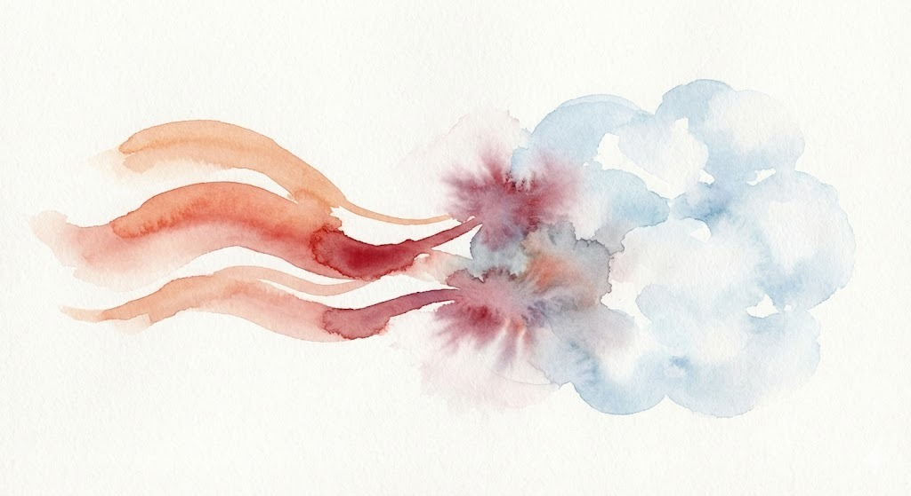
שמואל א
לשון הרע שהורגת
"וַיַּעַן דֹּאֵג הָאֲדֹמִי... רָאִיתִי אֶת בֶּן יִשַׁי בָּא נֹבֶה... וְצֵידָה נָת..."
שמואל א', כ"ב, ט'-י"ח
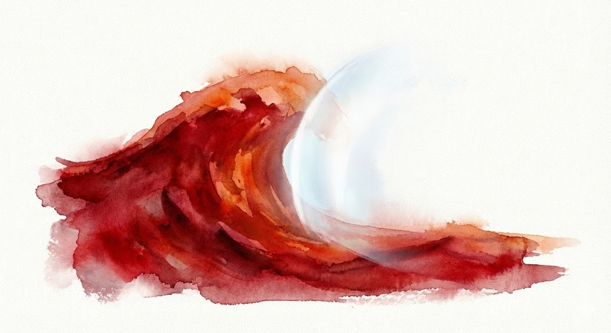
שמואל א
לנצח את היצר ברגע השיא
"וַיֹּאמְרוּ אַנְשֵׁי דָוִד אֵלָיו הִנֵּה הַיּוֹם אֲשֶׁר אָמַר ה' אֵלֶיךָ... וַיָ..."
שמואל א', כ"ד, ד'-ו'
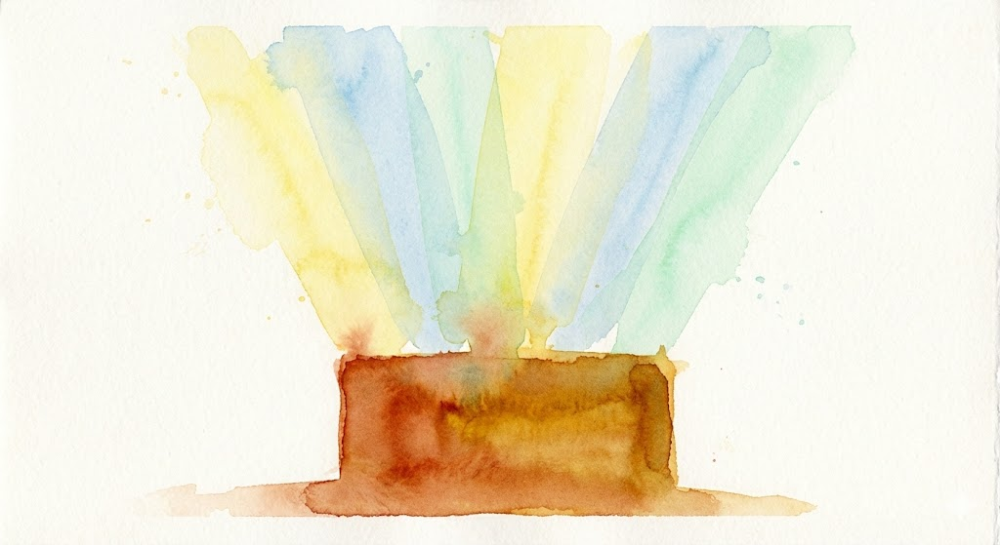
שמואל א
נפילתו של גיבור
"וַיֹּאמֶר שָׁאוּל לְנֹשֵׂא כֵלָיו שְׁלֹף חַרְבְּךָ וְדָקְרֵנִי בָהּ, פֶּן יָבוֹא..."
שמואל א', ל"א, ד'
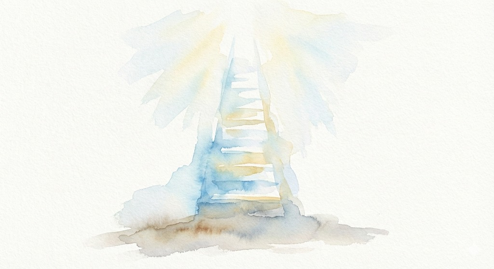
שמואל א
חכמת האישה בונה ביתה
"וַתְּמַהֵר אֲבִיגַיִל... וַתִּפֹּל לְאַפֵּי דָוִד עַל פָּנֶיהָ... וַתֹּאמֶר... ..."
שמואל א', כ"ה, י"ח-כ"ט
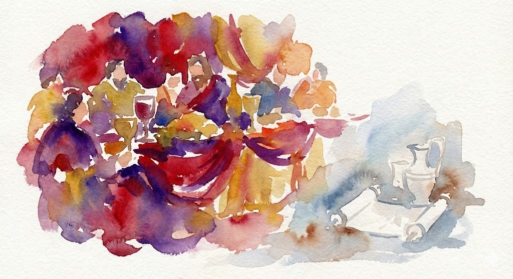
מגילת אסתר
המשתה שחגג את היאוש
"בִּשְׁנַת שָׁלוֹשׁ לְמָלְכוֹ עָשָׂה מִשְׁתֶּה לְכָל שָׂרָיו וַעֲבָדָיו חֵיל פָּר..."
אסתר א, ג–ד
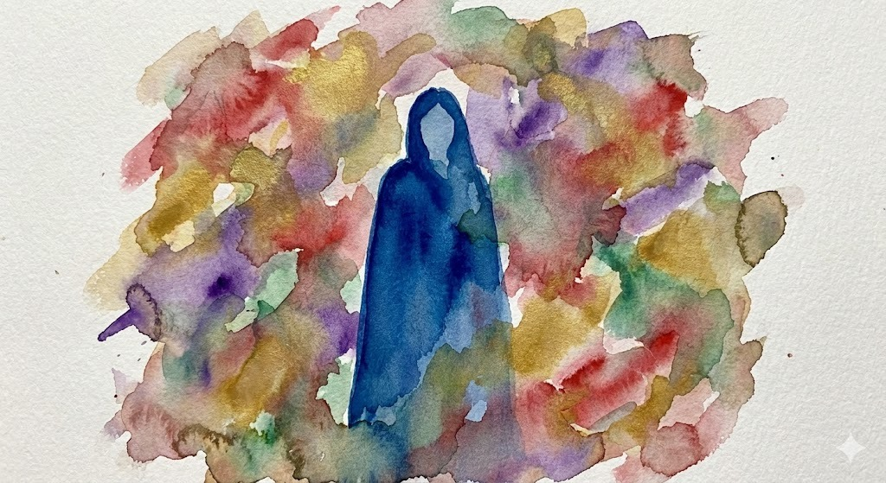
מגילת אסתר
סוד הזהות
"לֹא הִגִּידָה אֶסְתֵּר אֶת עַמָּהּ וְאֶת מוֹלַדְתָּהּ כִּי מָרְדֳּכַי צִוָּה עָל..."
אסתר ב, י
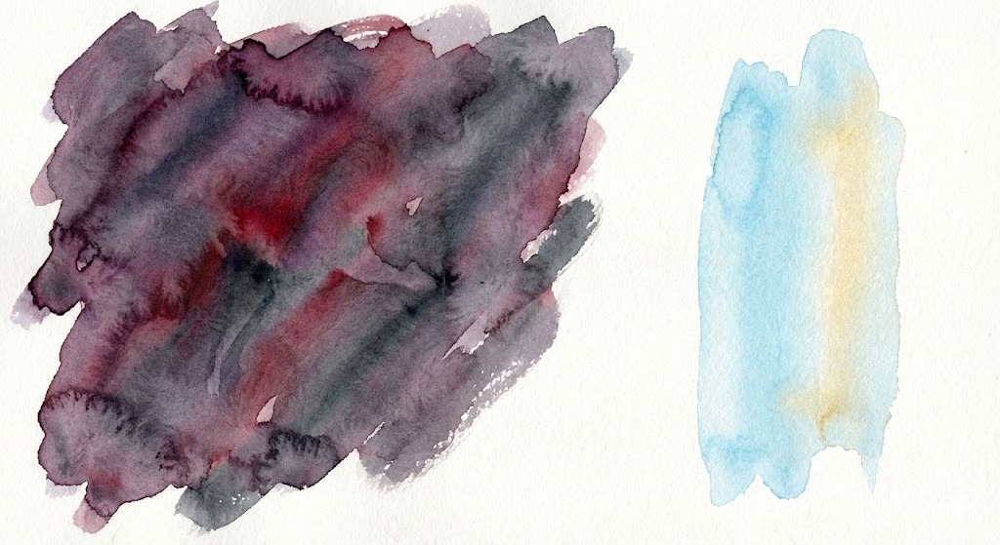
מגילת אסתר
העקשנות הקדושה
"וַיְהִי כְּאָמְרָם אֵלָיו יוֹם וָיוֹם וְלֹא שָׁמַע אֲלֵיהֶם וַיַּגִּידוּ לְהָמָן..."
אסתר ג, ד
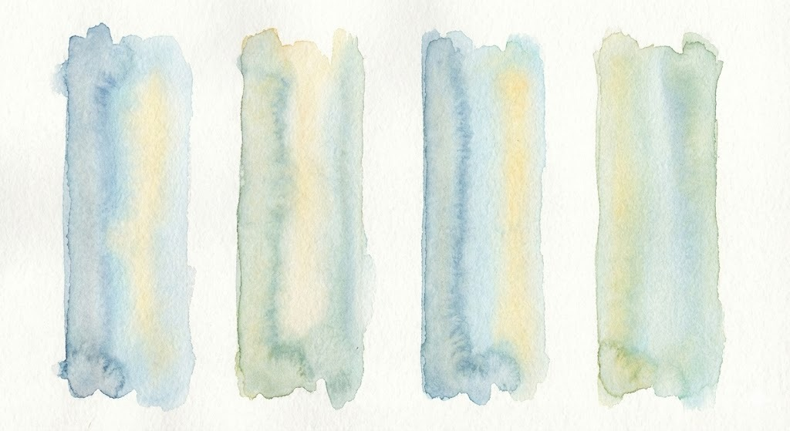
מגילת אסתר
הכוח שבפיזור
"וַיֹּאמֶר הָמָן לַמֶּלֶךְ אֲחַשְׁוֵרוֹשׁ יֶשְׁנוֹ עַם אֶחָד מְפֻזָּר וּמְפֹרָד ב..."
אסתר ג, ח
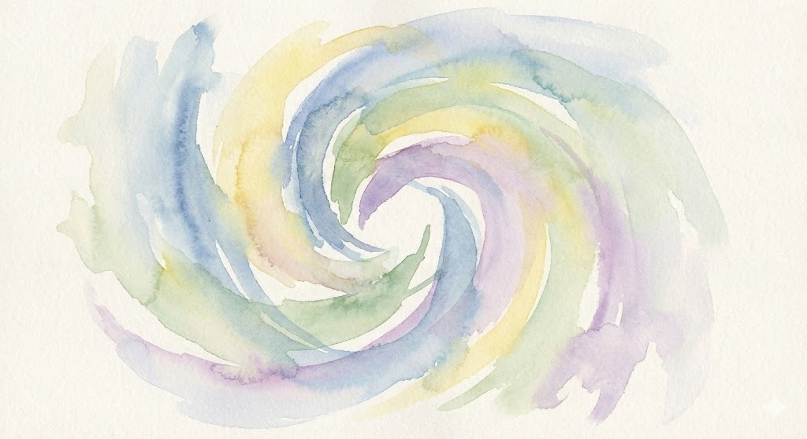
מגילת אסתר
התשובה לפירוד – כינוס
"לֵךְ כְּנוֹס אֶת כָּל הַיְּהוּדִים הַנִּמְצְאִים בְּשׁוּשָׁן וְצוּמוּ עָלַי וְאַ..."
אסתר ד, טז
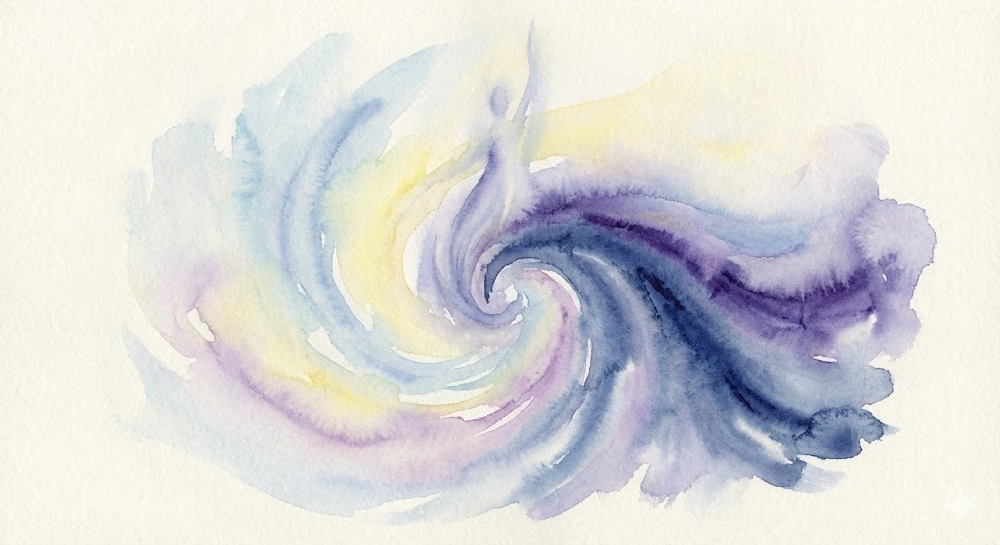
מגילת אסתר
רגע המבחן של הייעוד
"כִּי אִם הַחֲרֵשׁ תַּחֲרִישִׁי בָּעֵת הַזֹּאת רֶוַח וְהַצָּלָה יַעֲמוֹד לַיְּהוּ..."
אסתר ד, יד
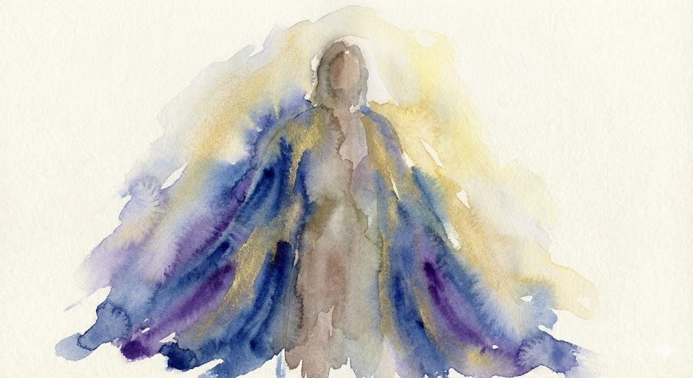
מגילת אסתר
להתלבש באמונה
"וַיְהִי בַּיּוֹם הַשְּׁלִישִׁי וַתִּלְבַּשׁ אֶסְתֵּר מַלְכוּת וַתַּעֲמֹד בַּחֲצַ..."
אסתר ה, א
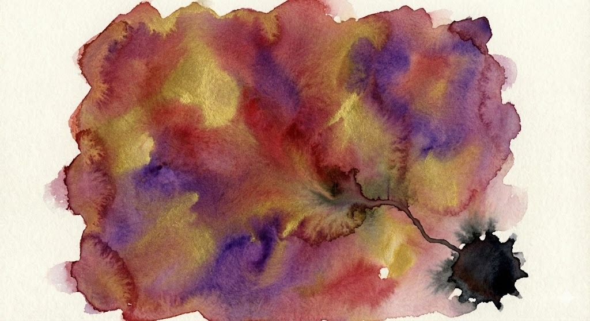
מגילת אסתר
המלכודת של חוסר הסיפוק
"וְכָל זֶה אֵינֶנּוּ שֹׁוֶה לִי בְּכָל עֵת אֲשֶׁר אֲנִי רֹאֶה אֶת מָרְדֳּכַי הַיְ..."
אסתר ה, יג
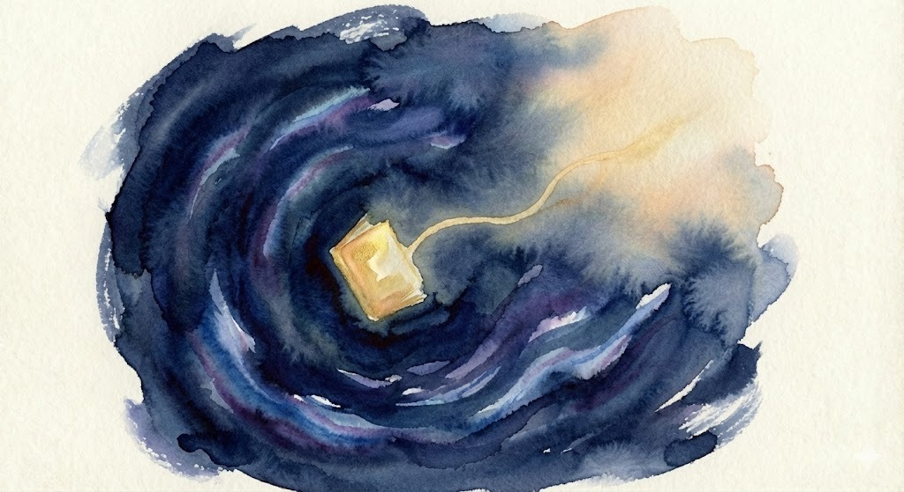
מגילת אסתר
נדודי השינה ששינו את העולם
"בַּלַּיְלָה הַהוּא נָדְדָה שְׁנַת הַמֶּלֶךְ וַיֹּאמֶר לְהָבִיא אֶת סֵפֶר הַזִּכְ..."
אסתר ו, א
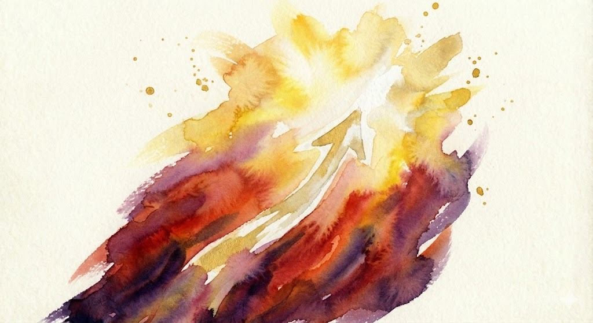
מגילת אסתר
חוק המשיכה הרוחני
"וַיְסַפֵּר הָמָן לְזֶרֶשׁ אִשְׁתּוֹ וּלְכָל אֹהֲבָיו אֵת כָּל אֲשֶׁר קָרָהוּ וַי..."
אסתר ו, יג
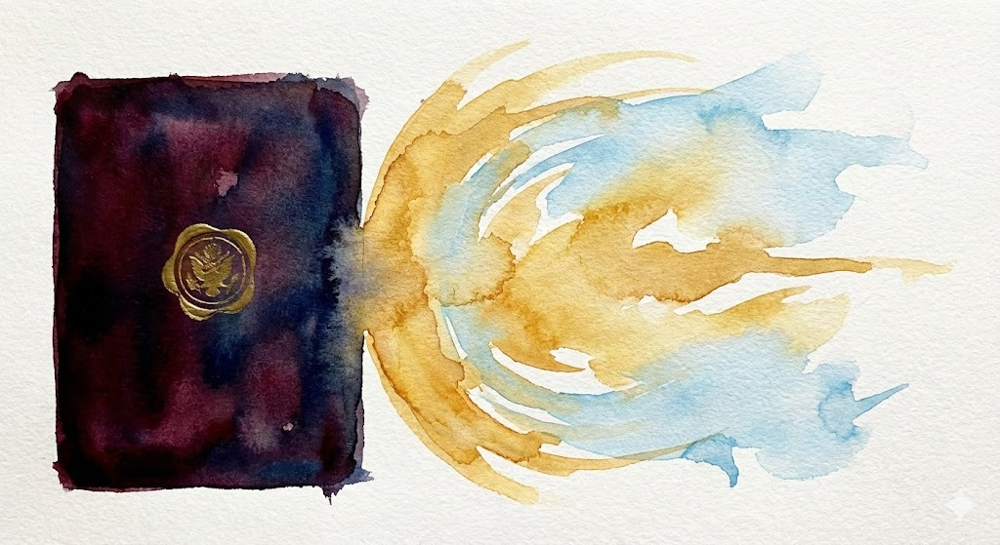
מגילת אסתר
להפוך את הגזירה, לא למחוק אותה
"וְאַתֶּם כִּתְבוּ עַל הַיְּהוּדִים כַּטּוֹב בְּעֵינֵיכֶם בְּשֵׁם הַמֶּלֶךְ וְחִת..."
אסתר ח, ח
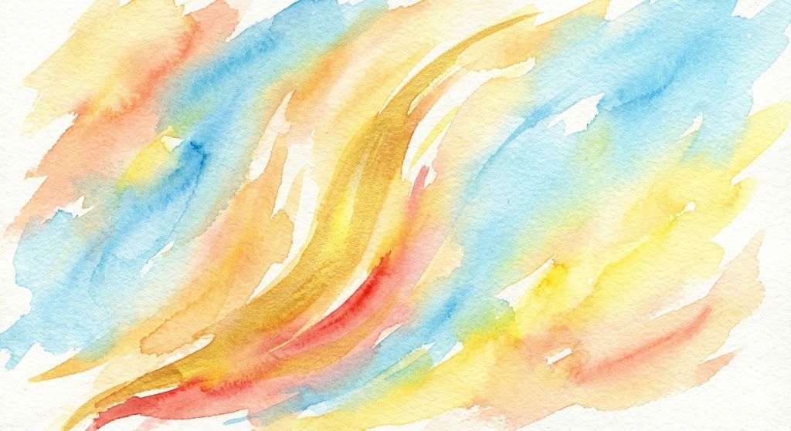
מגילת אסתר
סוד ההיפוך
"וּבִשְׁנֵים עָשָׂר חֹדֶשׁ הוּא חֹדֶשׁ אֲדָר בִּשְׁלוֹשָׁה עָשָׂר יוֹם בּוֹ אֲשֶׁ..."
אסתר ט, א
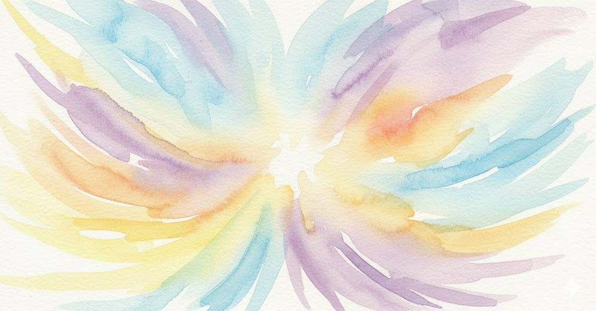
מגילת אסתר
סוד המהפך – לתת לאחר
"כַּיָּמִים אֲשֶׁר נָחוּ בָהֶם הַיְּהוּדִים מֵאֹיְבֵיהֶם וְהַחֹדֶשׁ אֲשֶׁר נֶהְפַ..."
אסתר ט, כב
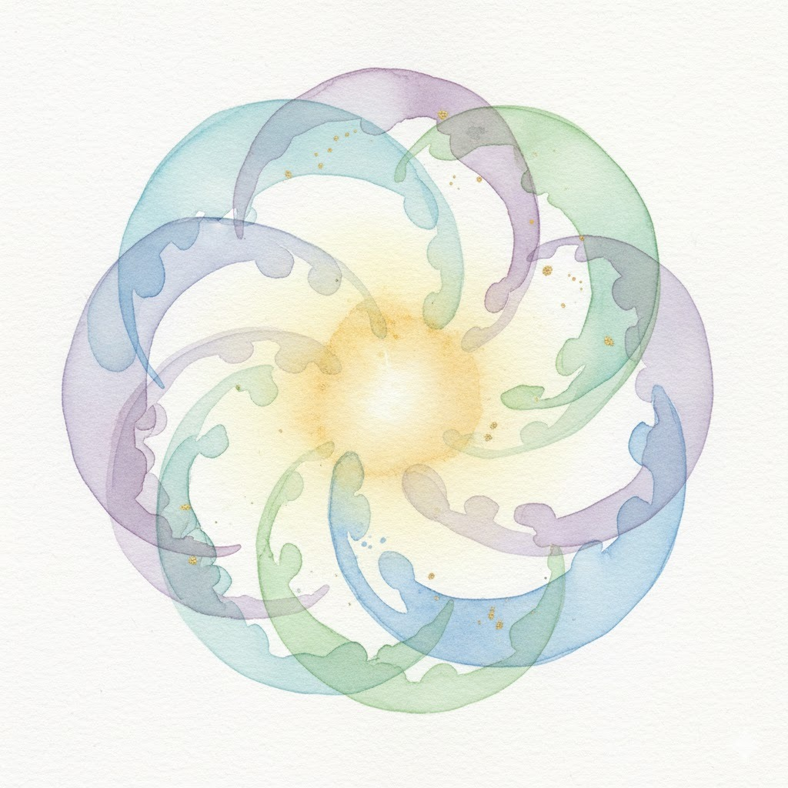
מגילת אסתר
לקבל מאהבה
"קִיְּמוּ וְקִבְּלוּ הַיְּהוּדִים עֲלֵיהֶם וְעַל זַרְעָם וְעַל כָּל הַנִּלְוִים ע..."
אסתר ט, כז
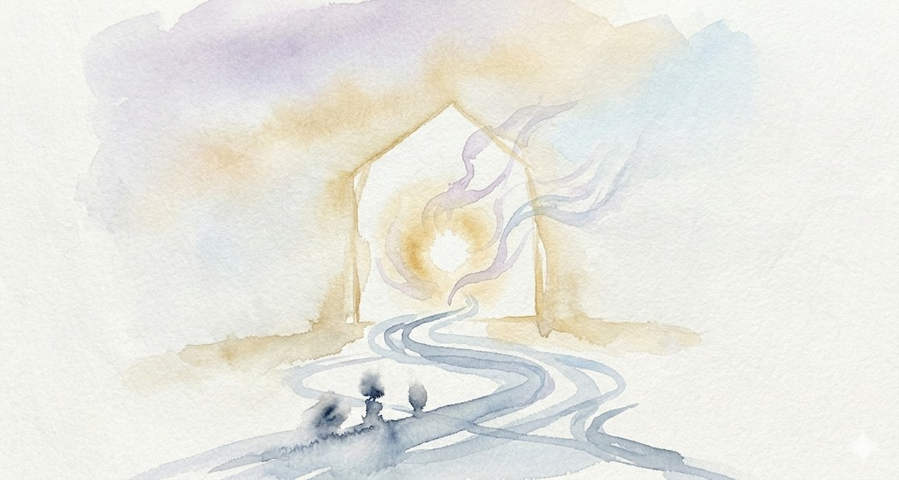
אחר
טור מיוחד: הניצחון על אדמת פרס
""
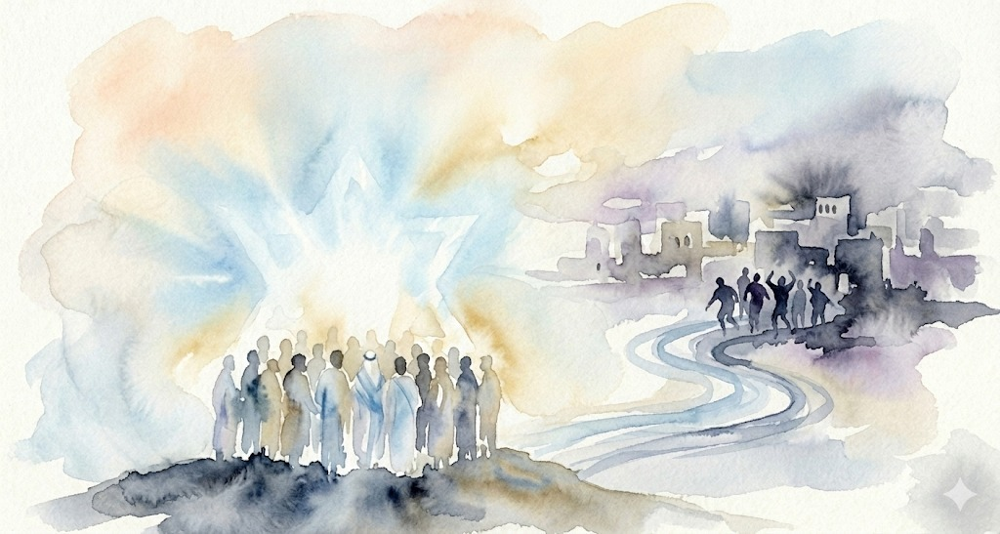
מגילת אסתר
אסתר ט, ב
"נִקְהֲלוּ הַיְּהוּדִים בְּעָרֵיהֶם בְּכָל מְדִינוֹת הַמֶּלֶךְ אֲחַשְׁוֵרוֹשׁ לִש..."
אסתר ט, ב
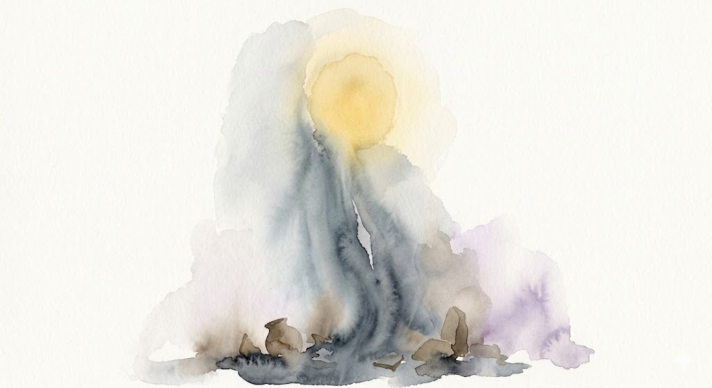
שמואל ב
לאחר חג הפורים המיוחד שעבר עלינו, אנחנו חוזרים לפניני תנ"ך מתוך ספר שמואל.
"וַיִּסְפְּדוּ וַיִּבְכּוּ וַיָּצֻמוּ עַד הָעֶרֶב עַל שָׁאוּל וְעַל יְהוֹנָתָן בְ..."
שמואל ב', א', י"ב
שמואל ב
לגשר על התהום
"וַיִּשְׁלַח דָּוִד מַלְאָכִים אֶל אַנְשֵׁי יָבֵישׁ גִּלְעָד וַיֹּאמֶר אֲלֵיהֶם ב..."
שמואל ב', ב', ה'
שמואל ב
מרירותה של מלחמת אחים
"וַיִּקְרָא אַבְנֵר אֶל יוֹאָב וַיֹּאמֶר הֲלָנֶצַח תֹּאכַל חֶרֶב הֲלוֹא יָדַעְתָּ..."
שמואל ב', ב', כ"ו
שמואל ב
סוד ההצלחה
"וַיֵּלֶךְ דָּוִד הָלוֹךְ וְגָדוֹל וַה' אֱלֹהֵי צְבָאוֹת עִמּוֹ"
שמואל ב', ה', י'
שמואל ב
שמחה אמיתית ללא גינונים
"וְדָוִד מְכַרְכֵּר בְּכָל עֹז לִפְנֵי ה' וְדָוִד חָגוּר אֵפוֹד בָּד"
שמואל ב', ו', י"ד
שמואל ב
לא להירדם בשמירה של הנוחות
"וַיֹּאמֶר הַמֶּלֶךְ אֶל נָתָן הַנָּבִיא רְאֵה נָא אָנֹכִי יוֹשֵׁב בְּבֵית אֲרָזִ..."
שמואל ב', ז', ב'
שמואל ב
חסד של מנצחים
"וַיֹּאמֶר דָּוִד הֲכִי יֶשׁ עוֹד אֲשֶׁר נוֹתַר לְבֵית שָׁאוּל וְאֶעֱשֶׂה עִמּוֹ ..."
שמואל ב', ט', א'
שמואל ב
גדלותה של הודאה באמת
"וַיֹּאמֶר דָּוִד אֶל נָתָן חָטָאתִי לַה' וַיֹּאמֶר נָתָן אֶל דָּוִד גַּם ה' הֶעֱ..."
שמואל ב', י"ב, י"ג
שמואל ב
לראות את המסר מאחורי העלבון
"וַיֹּאמֶר דָּוִד אֶל אֲבִישַׁי וְאֶל כָּל עֲבָדָיו הִנֵּה בְנִי אֲשֶׁר יָצָא מִמ..."
שמואל ב', ט"ז, י"א
שמואל ב
להעדיף אמת על פני הבטחות שווא
"וַיֹּאמֶר אַבְשָׁלוֹם אֶל חוּשַׁי הֲזֶה חַסְדְּךָ אֶת רֵעֶךָ לָמָּה לֹא הָלַכְתָ..."
שמואל ב', ט"ז, י"ז-י"ח
שמואל ב
לא להתייאש מתפילה
"וַיֹּאמֶר דָּוִד סַכֶּל נָא אֶת עֲצַת אֲחִיתֹפֶל ה'"
שמואל ב', ט"ו, ל"א
שמואל ב
אהבת אב שאינה תלויה בדבר
"וַיִּרְגַּז הַמֶּלֶךְ וַיַּעַל עַל עֲלִיַּת הַשַּׁעַר וַיֵּבְךְּ וְכֹה אָמַר בְּ..."
שמואל ב', י"ט, א'
שמואל ב
לדעת לקבל ביקורת גם כשהיא כואבת
"וַיָּבֹא יוֹאָב אֶל הַמֶּלֶךְ הַבָּיִת וַיֹּאמֶר הֹבַשְׁתָּ הַיּוֹם אֶת פְּנֵי כ..."
שמואל ב', י"ט, ו'-ח'
שמואל ב
לא לנטור טינה ביום של התחלה חדשה
"וַיַּעַן אֲבִישַׁי בֶּן צְרוּיָה וַיֹּאמֶר הֲתַחַת זֹאת לֹא יוּמַת שִׁמְעִי כִּי..."
שמואל ב', י"ט, כ"ב-כ"ג
שמות
ברכת החיים במצרים
"*וּבְנֵי יִשְׂרָאֵל פָּרוּ וַיִּשְׁרְצוּ וַיִּרְבּוּ וַיַּעַצְמוּ בִּמְאֹד מְאֹד..."
שמות א, ז
שמות
משימת ההפרדה מהרוע
"וַיִּבֶן עָרֵי מִסְכְּנוֹת לְפַרְעֹה אֶת פִּתֹם וְאֶת רַעַמְסֵס"
שמות א, יא
שמות
הופעתו המחודשת של הטוב
"וַתַּהַר הָאִשָּׁה וַתֵּלֶד בֵּן וַתֵּרֶא אֹתוֹ כִּי טוֹב הוּא וַתִּצְפְּנֵהוּ ש..."
שמות ב, ב
שמות
התגלות מתוך הקוצים
"וַיֵּרָא מַלְאַךְ ה' אֵלָיו בְּלַבַּת אֵשׁ מִתּוֹךְ הַסְּנֶה וַיַּרְא וְהִנֵּה ה..."
שמות ג, ב
שמות
הזרקור האלוקי מופנה לישראל
"וַיִּשְׁמַע אֱלֹהִים אֶת נַאֲקָתָם וַיִּזְכֹּר אֱלֹהִים אֶת בְּרִיתוֹ אֶת אַבְרָ..."
שמות ב, כד-כה
שמות
הפסוק היומי - פסוקי יציאת מצרים
"וַיֹּאמֶר אֱלֹהִים אֶל מֹשֶׁה אֶהְיֶה אֲשֶׁר אֶהְיֶה וַיֹּאמֶר כֹּה תֹאמַר לִבְנ..."
שמות ג, יד
שמות
הפסוק היומי - פסוקי יציאת מצרים
"וְשָׁמְעוּ לְקֹלֶךָ וּבָאתָ אַתָּה וְזִקְנֵי יִשְׂרָאֵל אֶל מֶלֶךְ מִצְרַיִם וַא..."
שמות ג, יח
שמות
הפסוק היומי - פסוקי יציאת מצרים
"וַיַּעַן מֹשֶׁה וַיֹּאמֶר וְהֵן לֹא יַאֲמִינוּ לִי וְלֹא יִשְׁמְעוּ בְּקֹלִי כִּ..."
שמות ד, א-ב
שמות
הפסוק היומי - פסוקי יציאת מצרים
"וַיְהִי בַדֶּרֶךְ בַּמָּלוֹן וַיִּפְגְּשֵׁהוּ ה' וַיְבַקֵּשׁ הֲמִיתוֹ"
שמות ד, כד
שמות
הפסוק היומי - פסוקי יציאת מצרים
"וַיְדַבֵּר אֱלֹהִים אֶל מֹשֶׁה וַיֹּאמֶר אֵלָיו אֲנִי ה'. וָאֵרָא אֶל אַבְרָהָם ..."
שמות ו, ב-ג
שמות
הפסוק היומי - פסוקי יציאת מצרים
"אֵלֶּה רָאשֵׁי בֵית אֲבֹתָם בְּנֵי רְאוּבֵן בְּכֹר יִשְׂרָאֵל חֲנוֹךְ וּפַלּוּא ..."
שמות ו, יד
שמות
הפסוק היומי - פסוקי יציאת מצרים
"וַיִּקְרָא גַּם פַּרְעֹה לַחֲכָמִים וְלַמְכַשְּׁפִים וַיַּעֲשׂוּ גַם הֵם חַרְטֻמ..."
שמות ז, יא
שמות
הפסוק היומי - פסוקי יציאת מצרים
"כֹּה אָמַר ה' בְּזֹאת תֵּדַע כִּי אֲנִי ה' הִנֵּה אָנֹכִי מַכֶּה בַּמַּטֶּה אֲשׁ..."
שמות ז, יז
שמות
הפסוק היומי - פסוקי יציאת מצרים
"וְהִפְלֵיתִי בַיּוֹם הַהוּא אֶת אֶרֶץ גֹּשֶׁן אֲשֶׁר עַמִּי עֹמֵד עָלֶיהָ לְבִלְ..."
שמות ח, יח
שמות
הפסוק היומי - פסוקי יציאת מצרים
"כִּי בַּפַּעַם הַזֹּאת אֲנִי שֹׁלֵחַ אֶת כָּל מַגֵּפֹתַי אֶל לִבְּךָ וּבַעֲבָדֶי..."
שמות ט, יד
פסוקי גאולה
הפסוק היומי - פסוקי גאולה לקראת יום העצמאות
"כֹּה אָמַר ה' אִם לֹא בְרִיתִי יוֹמָם וָלָיְלָה חֻקּוֹת שָׁמַיִם וָאָרֶץ לֹא שָׂ..."
ירמיהו לג, כה-כו
פסוקי גאולה
הפסוק היומי - פסוקי גאולה לקראת יום העצמאות
"קוּמִי אוֹרִי כִּי בָא אוֹרֵךְ וּכְבוֹד ה' עָלַיִךְ זָרָח. כִּי הִנֵּה הַחֹשֶׁךְ..."
ישעיהו ס, א-ב
פסוקי גאולה
הפסוק היומי - פסוקי גאולה לקראת יום העצמאות
"וְאַתָּה אַל תִּירָא עַבְדִּי יַעֲקֹב נְאֻם ה' וְאַל תֵּחַת יִשְׂרָאֵל כִּי הִנְ..."
ירמיהו ל, י
פסוקי גאולה
הפסוק היומי - פסוקי גאולה לקראת יום העצמאות
"וְשַׂשְׂתִּי עֲלֵיהֶם לְהֵיטִיב אוֹתָם וּנְטַעְתִּים בָּאָרֶץ הַזֹּאת בֶּאֱמֶת ב..."
ירמיהו לב, מא
פסוקי גאולה
הפסוק היומי - פסוקי גאולה לקראת יום העצמאות
"מַה נָּאווּ עַל הֶהָרִים רַגְלֵי מְבַשֵּׂר מַשְׁמִיעַ שָׁלוֹם מְבַשֵּׂר טוֹב מַש..."
ישעיהו נב, ז-ח
פסוקי גאולה
הפסוק היומי - פסוקי גאולה לקראת יום העצמאות
"מֵרָחוֹק ה' נִרְאָה לִי וְאַהֲבַת עוֹלָם אֲהַבְתִּיךְ עַל כֵּן מְשַׁכְתִּיךְ חָס..."
ירמיהו לא, ב-ג
פסוקי גאולה
הפסוק היומי - פסוקי גאולה לקראת יום העצמאות
"כֹּה אָמַר ה' קוֹל בְּרָמָה נִשְׁמָע נְהִי בְּכִי תַמְרוּרִים רָחֵל מְבַכָּה עַל..."
ירמיהו לא, יד-טז
פסוקי גאולה
הפסוק היומי - פסוקי גאולה לקראת יום העצמאות
"קוֹל שָׂשׂוֹן וְקוֹל שִׂמְחָה קוֹל חָתָן וְקוֹל כַּלָּה קוֹל אֹמְרִים הוֹדוּ אֶת..."
ירמיהו לג, יא
פסוקי גאולה
הפסוק היומי - פסוקי גאולה לקראת יום העצמאות
"נַחֲמוּ נַחֲמוּ עַמִּי יֹאמַר אֱלֹהֵיכֶם. דַּבְּרוּ עַל לֵב יְרוּשָׁלִַם וְקִרְ..."
ישעיהו מ, א-ב

פסוקי גאולה
הפסוק היומי - פסוקי גאולה לכבוד יום העצמאות
"עוֹד תִּטְּעִי כְרָמִים בְּהָרֵי שֹׁמְרוֹן נָטְעוּ נֹטְעִים וְחִלֵּלוּ. כִּי יֶש..."
ירמיהו לא, ד-ה

פסוקי גאולה
הפסוק היומי - פסוקי גאולה לכבוד יום העצמאות
"כִּי אַעֲלֶה אֲרֻכָה לָךְ וּמִמַּכּוֹתַיִךְ אֶרְפָּאֵךְ נְאֻם ה' כִּי נִדָּחָה ק..."
ירמיהו ל, יז-יח

פסוקי גאולה
הפסוק היומי - פסוקי גאולה לקראת יום העצמאות
"לְמַעַן צִיּוֹן לֹא אֶחֱשֶׁה וּלְמַעַן יְרוּשָׁלִַם לֹא אֶשְׁקוֹט עַד יֵצֵא כַנ..."
ישעיהו סב, א-ב

פסוקי גאולה
הפסוק היומי - פסוקי גאולה
"כִּי זֹאת הַבְּרִית אֲשֶׁר אֶכְרֹת אֶת בֵּית יִשְׂרָאֵל אַחֲרֵי הַיָּמִים הָהֵם ..."
ירמיהו לא, לב

פסוקי גאולה
הפסוק היומי - פסוקי גאולה
"וַתֹּאמֶר צִיּוֹן עֲזָבַנִי ה' וַאדֹנָי שְׁכֵחָנִי. הֲתִשְׁכַּח אִשָּׁה עוּלָהּ ..."
ישעיהו מט, יד-טז
🔍
לא נמצאו תוצאות